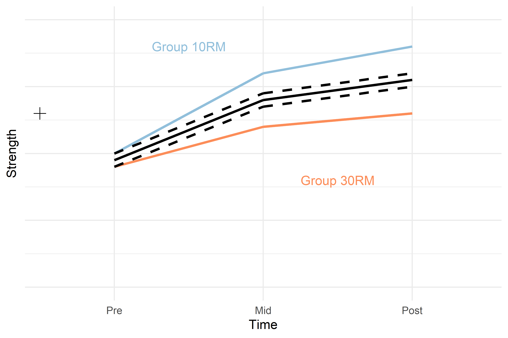

20 Mixed models - Interpretation and visualization
20.1 A multiple time-point study
In previous lessons where we used ANCOVA models to account for the baseline we were able to get away with a simple linear regression model. This because we modeled the change- or post-scores, we did not get any correlated errors (not multiple data points from each participant). The tenthirty data set contains three time-points per participant, it is thus not straight forward to put all this data in one model as the data are correlated. As we saw in a previous lesson, not accounting for the correlation in repeated measures studies could affect statistical power.
In this lesson we will model strength data with a linear mixed model (LMM). We will interpret the output and make plots of the model estimates.
20.1.1 An hypothetical example
A theoretical outcome of the study in this example could look something like in Figure 1 below.
The 30RM group starts off at approximately the same level as the 10RM group. After the first period (from Pre to Mid) the 10RM group potentially increases strength more than the 30RM group, the difference could be maintained to the Post time-point.
Instead of modeling the effect of the baseline on the outcome we could control for it by adjusting the average levels at Mid and Post by removing the differences seen at baseline. This is the basic approach when analyzing repeated measures deigns with mixed models. Before we get to this step we will build the model from the bottom up.
In a first model we do not include any “fixed effects”. We only estimate the mean of the whole data set, the very basic model formulation could look some thing like:
\[y = \beta_0\] In R, we would write this model formula as
strength ~ 1given that the dependent variable (y) is a variable we call strength. The number 1 indicates that we only include an intercept in the model. Thus, the data are explained with an intercept only. In the figure below, this model is represented by the black cross.
We could add information about the time-points to the model, still leaving out information regarding grouping. This model formulation could look something like this:
\[y = \beta_0 + \beta_{Mid} + \beta_{Post}\] Where \(\beta_{Mid}\) is a dummy variable assigned number 1 when time = “mid” otherwise 0, and \(\beta_{Post}\) is a dummy variable assigned 1 when time = “post” otherwise 0. This model, given our hypothetical data in this example could look like the black line in the plot below.
In R, we would write this model formula as
strength ~ timeR automatically converts the time variable to two dummy variables as described in the formula above.
To account for the difference between groups at baseline we could add an estimate of the effect of baseline differences. In a simplified description this could look like:
\[y = \beta_0 + \beta_{Group} + \beta_{Mid} + \beta_{Post}\] Where the additional \(\beta_{Group}\) is a dummy variable assigning 1 to all observations in the 30RM group and 0 otherwise. In R we extend the model formulation simply by adding group:
In R, we would write this model formula as
strength ~ group + time Estimates from the new model will have one “line” per group representing the average difference between groups at baseline but not accounting for differences in changes over time per group. The two black dashed lines in Figure 3 represents this model.

Notice that the addition of the group term creates two parallel lines representing each group. To fully capture the average changes per group we need to let the model account for different changes per time in each group. We do this by adding an “interaction term”. The interaction term allows for each group to have different values at “Mid” and “Post”.
A simplified model formulation could look like this:
\[y = \beta_0 + \beta_{Group} + \beta_{Mid} + \beta_{Post} + \beta_{Mid:Group} + \beta_{Post:Group}\]
In R, we would write this model formula as
strength ~ group + time + group:timeWe may also simplify the above formula like this:
strength ~ group * time The output from this model given our hypothetical data could look like in table 1.
| Coefficient | Estimate |
|---|---|
| Intercept | 0.45 |
| TimeMid | 0.15 |
| TimePost | 0.20 |
| Group10RM | 0.05 |
| TimeMid:Group10RM | 0.15 |
| TimePost:Group10RM | 0.20 |
The 30RM group is the reference group so the intercept estimate is the mean in this group at the Pre time point. The 30RM group increases by 0.15 units from Pre to Mid and 0.20 units from Pre to Post. At Pre, the 10RM group is 0.05 units above the 30RM group. Compared to the change seen in the 30RM group, the 10RM group increases an additional 0.15 points Pre to Mid and an additional 0.20 units from Pre to Post.
To calculate the average in the 30RM group at Mid we can combine estimates from the regression table (above) according to our model formula. Keeping only the terms needed
\[y = \beta_0 + \beta_{Mid} \] \[y = 0.45 + 0.15\]
\[y = 0.6\] The same principles apply if we want to know the estimated mean in the 10RM group at Post, keeping the relevant terms:
\[y = \beta_0 + \beta_{Group} + \beta_{Post} + \beta_{Post:Group}\] \[y=0.45 + 0.05 + 0.2 + 0.2\] \[y=0.9\] By adding up the terms in a linear fashion (hence linear regression) we can calculate the estimated averages from both groups.
The final model allows for different changes over time per group. And different regression estimates will reflect these patterns (Figure 4).
20.1.2 Inference from a repeated measures study
In the scenario described above the most meaningful comparison between groups are the differences in change over time between groups. This is because our design lets us do this comparison. A comparison that is much more uncertain in a study like this is the within-group changes over time. This is because we do not have a control condition for comparison. Imagine that in our example above, the two groups are both training, comparing the two groups means that we are comparing two different training protocols. We might be tempted to say that the average increase in strength is due to the training, however, strictly speaking this problematic as we do not have a group of randomly assigned individuals who have performed all tests but not performed the training. The effect we see on strength on average could be an effect of learning the strength test. We can not isolate the training effect from other effects when we do not have a control group!
In comparing the two training protocols we do have a control as we are comparing the two groups to each other.
20.1.2.1 Evaluating regression coefficients
In the hypothetical example above the two coefficients that are of interest are the two interaction estimates. Let’s evaluate their confidence intervals. Table 2 gives hypothetical 95% confidence intervals on the interaction terms.
| Coefficient | Estimate | 95% CI |
|---|---|---|
| TimeMid:Group10RM | 0.15 | -0.05, 0.35 |
| TimePost:Group10RM | 0.20 | 0.05, 0.35 |
The interpretation could be that the 10RM group increases strength more than the 30RM group, the 95% CI at time-point Mid indicate that no difference between groups are within the probable values (95% CI) indicating true effect might here might be no difference. At time-point post, our 95% CI indicates that we do not have the zore-effect among our probable values.
20.2 Using real data
We start by loading the data and packages. Notice that we are loading the lme4 package that we will use to fit mixed models. We also load the emmeans package that we will use to get estimates from each model. For this example we will work with leg-press data.
library(tidyverse); library(exscidata); library(lme4); library(emmeans); library(pbkrtest)Loading required package: Matrix
Attaching package: 'Matrix'The following objects are masked from 'package:tidyr':
expand, pack, unpackdata("tenthirty")
dat <- tenthirty %>%
filter(exercise == "legpress") %>%
# Fix the time factor in the right order for plotting
# and fix the grouping so that the 30RM group comes first (comparing to 30RM)
mutate(time = factor(time, levels = c("pre", "mid", "post")),
group = factor(group, levels = c("RM30", "RM10")))20.2.1 Data exploration
It is always a good idea to plot the data to get a sense of what you will find in any subsequent models. Let’s build a plot that shows changes in strength for each participant in each group.
dat %>%
# build the plot, each participant (subject) will get a line, group = subject
# will take care of this. Each group will get it's own color, color = group
# will take care of that.
ggplot(aes(time, load, group = participant, color = group)) + geom_line() +
theme_minimal()Warning: Removed 3 rows containing missing values (`geom_line()`).We can see that most participants increase their strength, it is not clear if one group increases more than the other. We can add box-plots on top to get an idea.
dat %>%
# build the plot, each participant (subject) will get a line, group = subject
# will take care of this. Each group will get it's own color, color = group
# will take care of that.
ggplot(aes(time, load, group = participant, color = group)) +
geom_line() +
# remove grouping from boxplots to plot group averages
geom_boxplot(aes(group = NULL), width = 0.5) +
theme_minimal()Warning: Removed 3 rows containing non-finite values (`stat_boxplot()`).Warning: Removed 3 rows containing missing values (`geom_line()`).The graphics suggests a small effect in favor of 10RM at post. Let’s fit the model.
20.2.2 Fit a mixed model
The model will be fairly simple. We want to compare the two groups an model any differences in change over time. This means that the model must contain the time and group variable as well as their interaction giving each group a chance to “vary on their own”. The beauty of the mixed model is that we can account for repeated data just by using the subject indicator a random efect. The data in this example allows for the inclusion of a random intercept, meaning that each particiapnt will be compared from their own strating point (intercept).
# The lmer function from the lme4 package.
m1 <- lmer(load ~ time * group + (1|participant), data = dat)Before doing anything with this model we will have to check if our assumptions are met. Let’s do a residuals plot.
plot(m1)The residual plot indicates that there are no obvious patterns in the data, the residual variation is similar over the range of fitted values. The model is OK.
We can now check if the model behaves similar to what we expect when looking at the raw data. We will use the emmeans package to get model estimates, estimated averages at each time-point within each group. The data may be plotted. emmeans performs the calculations based on the fixed effects estimates as we did by hand above.
# Using the model (m1) we can specify the emmeans function to get model estimates
# The specs argument specifies what means to calculate from the model.
# The code below takes care of the full model (including interactions).
est <- emmeans(m1, specs = ~ time|group)To use an object created with emmeans in plotting we need to convert it to a data frame. It is then straight forward to plot.
est %>%
data.frame() %>%
ggplot(aes(time, emmean, group = group, color = group)) + geom_line() +
theme_minimal()In the code creating the plot above I specified the group and color arguments in ggplot to equal group in our data set. This means that lines will be drawn with different colors connecting data from each group.
We can see in the figure that the 10RM group on average seems to increase more from pre to post than the 30RM group.
We could add error-bars to this plot that represents the 95% confidence interval of each estimate. I will tweak the plot further to avoid over-plotting and add points to indicate where estimates have been made.
est %>%
data.frame() %>%
ggplot(aes(time, emmean, group = group, color = group)) +
geom_errorbar(aes(ymin = lower.CL, ymax = upper.CL),
position = position_dodge(width = 0.2),
width = 0.1) +
geom_line(position = position_dodge(width = 0.2)) +
geom_point(position = position_dodge(width = 0.2)) +
theme_minimal()The position = position_dodge(width = 0.2) argument inside geom_errorbar(), geom_point() and geom_line() moves the points, lines and error-bars away from each other based on the grouping (group = group in aes()). The width argument in geom_errobar sets the width of the error-bars. There is nothing magical with these numbers, I just think it looks nice.
The confidence bounds around each measurement does not really answer our question of differences between groups in change over time. These are just the 95% CI around the estimated means for each group at each time-point. Some would say that they are so non-informative that they should not be presented. I think it is good practice to plot what the model estimates, this gives you an opportunity to assess if the model actually captures the data! We get standard errors and 95% confidence intervals from model estimates and the 95% CI are preferred for plotting.
20.2.3 Do the model capture the data?
Lets combine raw data and model estimates in the same plot! We can combine several data sources in ggplots like described in the code below. We will simply extend the last figure and include raw data. By including a separate data argument in a geom_ we can overlay these data on the same plot.
est %>%
data.frame() %>%
ggplot(aes(time, emmean, group = group, color = group) ) +
# Adds raw data
geom_line(data = dat, aes(time, load, group = participant, color = group),
# Add transparency to individual lines
alpha = 0.4) +
geom_errorbar(aes(ymin = lower.CL, ymax = upper.CL),
position = position_dodge(width = 0.2),
width = 0.1) +
geom_line(position = position_dodge(width = 0.2)) +
geom_point(position = position_dodge(width = 0.2)) +
theme_minimal()Warning: Removed 3 rows containing missing values (`geom_line()`).Using alpha = 0.4 we make the lines representing individual data a bit more transparent. Nice! We now have a plot showing the raw data and the model estimates. They seem to capture the data pretty well (we have also seen the residual plot indicating this).
20.2.4 Inference about the effect of interest
We have still not answered our question regarding the effect of training with different intensity. To do this we will need to get the estimates of the interaction coefficients from the model. To keep up with our very visual way of looking at the data we could plot the confidence intervals from these effects. Using the confint() function we will get the 95% CI from each model coefficient.
We need to build a data frame out of this information and the coefficients from the summary() output.
# Save the confidence intervals
conf_intervals <- confint(m1)Computing profile confidence intervals ...# Save the regression coefficients
coefs <- summary(m1)$coef
# Using cbind (column bind) to combine the two data frames
coef_summary <- cbind(coefs, data.frame(conf_intervals)[3:8, ])
# Print the table in a pretty format
coef_summary %>%
kable()| Estimate | Std. Error | t value | X2.5.. | X97.5.. | |
|---|---|---|---|---|---|
| (Intercept) | 281.53846 | 20.120706 | 13.9924743 | 242.37410 | 320.70282 |
| timemid | 35.00000 | 8.968506 | 3.9025454 | 17.80241 | 52.19759 |
| timepost | 38.86796 | 9.550460 | 4.0697470 | 20.53927 | 57.16481 |
| groupRM10 | -7.60989 | 27.942231 | -0.2723437 | -61.99862 | 46.77884 |
| timemid:groupRM10 | 11.07143 | 12.454834 | 0.8889262 | -12.81138 | 34.95423 |
| timepost:groupRM10 | 38.57427 | 13.043542 | 2.9573464 | 13.57176 | 63.59255 |
X2.5.. and X97.5.. represents the lower and upper confidence interval for each estimate. The estimate that we are interested in are timemid:groupRM10and timepost:groupRM10. We can now reduce the data frame and plot it to show estimated differences between groups at time-points “mid” and “post”.
We will make a plot mirroring the plot showing raw values and model estimates. We need all time-points to be represented but only “mid” and “post” to contain data.
coef_summary %>%
mutate(coef = rownames(.)) %>%
# Filter only the interaction variables
filter(coef %in% c("groupRM10", "timemid:groupRM10", "timepost:groupRM10")) %>%
# Make a "timepoint" variable to represent the "dat" data set.
mutate(time = gsub("time", "", coef),
time = gsub(":groupRM10", "", time),
time = if_else(time == "groupRM10", "pre", time)) %>%
# Fix order of the time variable
mutate(time = factor(time, levels = c("pre", "mid", "post"))) %>%
# Create the plot
ggplot(aes(time, Estimate)) +
# Add a line indicating zero geom_hline (horizontal line)
geom_hline(yintercept = 0, lty = 2) +
geom_errorbar(aes(ymin = X2.5.., ymax = X97.5..), width = 0.1) +
geom_point(shape = 24, size = 3, fill = "white") +
theme_minimal()The plot shows the differences between groups at time-points “mid” and “post” after accounting for baseline differences (“pre”). This is the answer to our question regarding the differences between training intensity, 10RM seems to be superior!
We can combine the two plots. The package cowplot has functions to plot several ggplots into one single plot.
First we save each plot and the combine them using plot_grid. I will do some modifications to make the plot a bit nicer.
## Figure 1: Estimated means and raw data
figA <- est %>%
data.frame() %>%
ggplot(aes(time, emmean, group = group, color = group) ) +
# Adds raw data
geom_line(data = dat, aes(time, load, group = participant, color = group),
# Add transparency to individual lines
alpha = 0.4) +
geom_errorbar(aes(ymin = lower.CL, ymax = upper.CL),
position = position_dodge(width = 0.2),
width = 0.1) +
geom_line(position = position_dodge(width = 0.2)) +
geom_point(position = position_dodge(width = 0.2)) +
theme_minimal() +
# Changing axis titles and title in the legend
labs(y = "Legpress 1RM load (kg)",
color = "Intensity") +
# Removing text and indicators on the x-axis as these can be represented in the
# other plot
theme(axis.text.x = element_blank(),
axis.title.x = element_blank())
# Figure B: Differences between groups (interaction terms with 95% CI)
figB <- coef_summary %>%
mutate(coef = rownames(.)) %>%
# Filter only the interaction variables
filter(coef %in% c("groupRM10", "timemid:groupRM10", "timepost:groupRM10")) %>%
# Make a "timepoint" variable to represent the "dat" data set.
mutate(time = gsub("time", "", coef),
time = gsub(":groupRM10", "", time),
time = if_else(time == "groupRM10", "pre", time)) %>%
# Fix order of the time variable
mutate(time = factor(time, levels = c("pre", "mid", "post"))) %>%
# Create the plot
ggplot(aes(time, Estimate)) +
# Add a line indicating zero geom_hline (horizontal line)
geom_hline(yintercept = 0, lty = 2) +
geom_errorbar(aes(ymin = X2.5.., ymax = X97.5..), width = 0.1) +
geom_point(shape = 24, size = 3, fill = "white") +
theme_minimal() +
# Changing axis titles and title in the legend
labs(y = "Average group differences\n(kg, 95% CI)",
color = "Intensity")
# Using cowplot to plot both figures in 1
library(cowplot)
Attaching package: 'cowplot'The following object is masked from 'package:lubridate':
stamp# Plot grid using figA and figB
plot_grid(figA, figB, ncol = 1,
# Align vertically so that the x axis matches
align = "v",
# Set alignment so that axis align both on the left (l) and right (r)
# axis
axis = "lr")Warning: Removed 3 rows containing missing values (`geom_line()`).# Learn more about aligning:
# https://wilkelab.org/cowplot/articles/aligning_plots.htmlSuccess! We no have a two part figure showing model estimates and estimated mean differences between training conditions.
20.2.5 More about the model summary
Using summary(m1) we can get more information about the model we have fitted.
summary(m1)Linear mixed model fit by REML ['lmerMod']
Formula: load ~ time * group + (1 | participant)
Data: dat
REML criterion at convergence: 752.7
Scaled residuals:
Min 1Q Median 3Q Max
-1.77740 -0.40616 -0.04183 0.32323 2.07515
Random effects:
Groups Name Variance Std.Dev.
participant (Intercept) 4740.1 68.85
Residual 522.8 22.87
Number of obs: 78, groups: participant, 27
Fixed effects:
Estimate Std. Error t value
(Intercept) 281.538 20.121 13.992
timemid 35.000 8.969 3.903
timepost 38.868 9.550 4.070
groupRM10 -7.610 27.942 -0.272
timemid:groupRM10 11.071 12.455 0.889
timepost:groupRM10 38.574 13.044 2.957
Correlation of Fixed Effects:
(Intr) timemd timpst grRM10 tmm:RM10
timemid -0.223
timepost -0.209 0.470
groupRM10 -0.720 0.160 0.151
tmmd:grRM10 0.160 -0.720 -0.338 -0.223
tmpst:gRM10 0.153 -0.344 -0.732 -0.213 0.477 Let’s first examine the random effects. In this model they are represented by a random intercept meaning that each participant has their own intercept in the model. The Std.Dev. (or standard deviation) in the random effects table indicates the mean variation between participants intercept. They vary at average 68.85 kg from the mean of each group.
The Residual indicates the variation that is not accounted for in the model by either random nor fixed effects.
The fixed effects are the model estimates of group and time effects in the model. This what we use to draw conclusions about their effects. Notice that we do not get any p-values. These have been left out of the lmer function.
Next table contains “approximate correlation of the estimator of the fixed effects”1 (??). They are subject to more advanced discussions.
We have already seen that confint function can be used to get confidence intervals.
20.2.5.1 I neeeeed p-values
There are several options (see ?lme4::pvalues). A nice intuitive option is the removal of the term you are interested in and model comparison.
Let’s say that we are interested in the interaction between group and time. If this interaction is important, adding this information to the model would increase it’s ability to explain the data. We can actually test if this is true and in process get a p-value. Technically we will do a likelihood-ratio test. This tests compares two models and determines which one fits the data best.
# Fit a model not containing the interaction
m0 <- lmer(load ~ time + group + (1|participant), data = dat)
# Fit a model containing the interaction term
m1 <- lmer(load ~ time * group + (1|participant), data = dat)
# Compare the models using the anova function
anova(m0, m1)refitting model(s) with ML (instead of REML)Data: dat
Models:
m0: load ~ time + group + (1 | participant)
m1: load ~ time * group + (1 | participant)
npar AIC BIC logLik deviance Chisq Df Pr(>Chisq)
m0 6 813.37 827.51 -400.68 801.37
m1 8 808.33 827.18 -396.16 792.33 9.039 2 0.01089 *
---
Signif. codes: 0 '***' 0.001 '**' 0.01 '*' 0.05 '.' 0.1 ' ' 1The output gives you the model formulation of each model being compared. The AIC is a measure of goodness of fit a lower value is better. The logLik is the value tested in a Chi2 test and the p-value indicates if the models differ more than would be expected due to sampling error. Above, the comparison of models indicate that it is quite unlikely to see this difference if the models explained the data similarly. Thus, adding the interaction increases model m1s ability to explain the data, there is evidence for an interaction effect in the data.
20.3 Summary
Mixed models are very useful for fitting data containing correlated data. This e.g. is data where multiple data points are gathered from the same individuals such as in repeated measures designs. Mixed models can be extended in many ways to capture even more complicated data sets. Plotting the output of models are very useful to get a feeling about the model performace and what they actually tell you. Confidence intervals can be used for inference. If p-values are needed it is suggested that you use liklihood ratio tests to compare model.
https://stat.ethz.ch/pipermail/r-sig-mixed-models/2009q1/001941.html↩︎